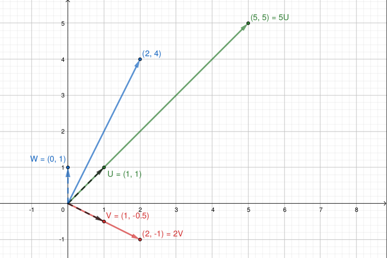
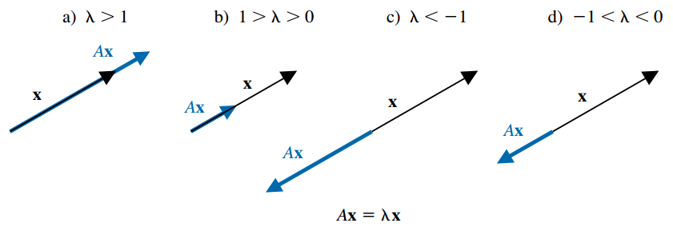
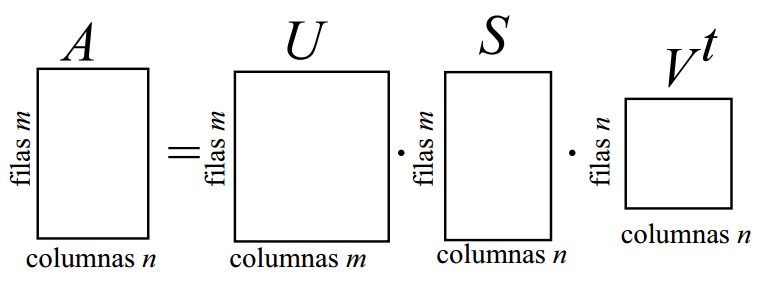
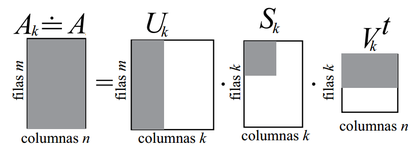
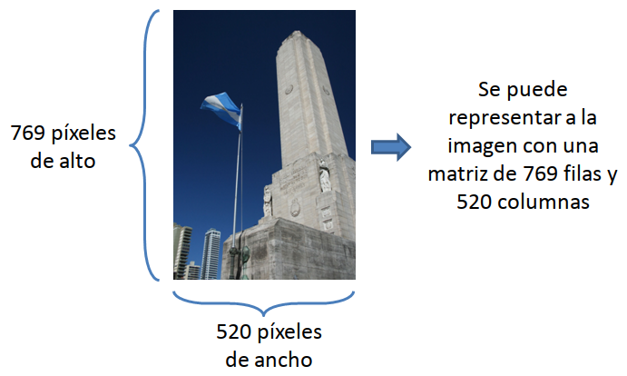
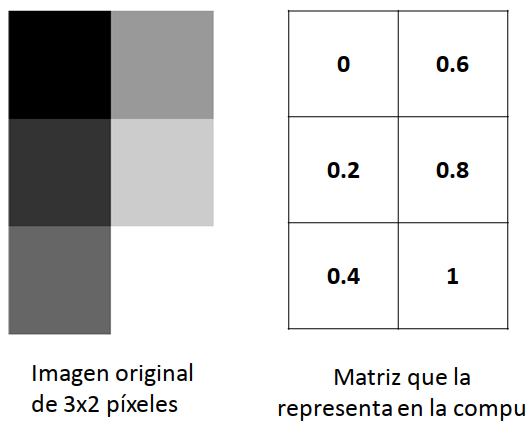
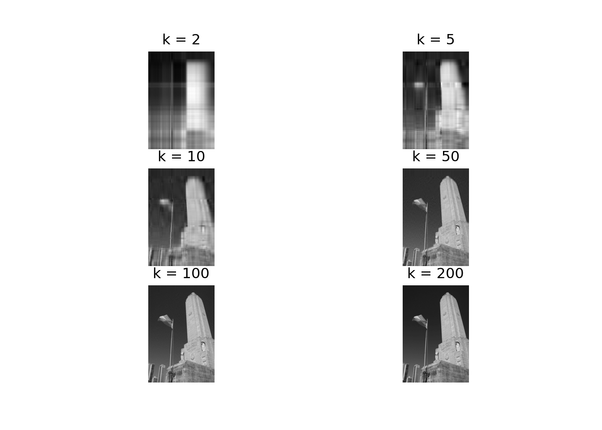
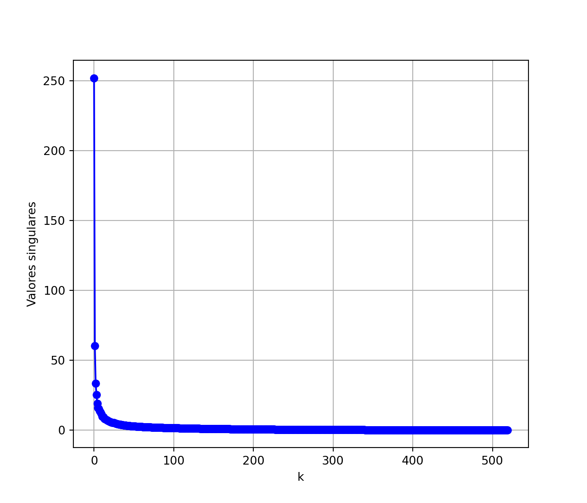

5 Valores y vectores propios
5.1 Introducción
- Una matriz \(m \times n\) se puede considerar como una función que utiliza multiplicación de matrices para transformar vectores columna \(n\)-dimensionales en vectores columna \(m\)-dimensional.
- Por eso, toda matriz \(\mathbf A\) de dimensión \(m \times n\) puede ser pensada como una transformación lineal de \(\mathbb R^n\) a \(\mathbb R^m\):
\[ T: \mathbb R^n \rightarrow \mathbb R^m \quad | \quad T(\mathbf x) = \mathbf{Ax} \]
- Nos va a interesar de manera particular los casos donde esta función está definida por una matriz \(\mathbf A\) cuadrada (de dimensión \(n \times n\)), con lo cual la transformación \(\mathbf{Ax}\) toma un vector en \(\mathbb R^n\) y devuelve otro en \(\mathbb R^n\).
- Ahora bien, en general no es muy intuitivo saber qué tipo de cambios va a sufrir un vector \(\mathbf x\) si lo premultiplicamos por \(\mathbf A\).
- Pero hay ciertos vectores que se modifican de una manera muy sencilla: lo único que hace la matriz \(\mathbf A\) es “estirarlos” o “comprimirlos”. Es decir, puede cambiar su módulo o sentido, pero no su dirección.
- Expresado matemáticamente, para algunos vectores, la transformación \(\mathbf{Ax}\) da por resultado el mismo vector \(\mathbf{x}\), multiplicado por una constante no nula \(\lambda\): \(\mathbf{Ax} = \lambda \mathbf{x}\).
- Estos vectores que “cambian poco” cuando se los transforma mediante la matriz \(\mathbf A\) reciben el nombre de autovectores, vectores propios o eigenvectores de matriz \(\mathbf A\).
Definición: Un autovector de una matriz \(\mathbf{A}\) es cualquier vector \(\mathbf{x}\) para el que sólo cambia su escala cuando se lo multiplica con \(\mathbf{A}\), es decir: \(\mathbf{Ax} = \lambda \mathbf{x}\), para algún número \(\lambda\) real o complejo, que recibe el nombre de autovalor. En otras palabras:
\[\mathbf{x} \text{ es un autovector y } \lambda \text{ es un autovalor de }\mathbf{A} \iff \mathbf{Ax} = \lambda \mathbf{x}, \quad \mathbf{x} \neq \mathbf{0}, \quad \lambda \in \mathbb{C}\]
- Los autovalores y autovectores son muy importantes en muchas disciplinas, ya que los objetos que se estudian suelen ser representados con vectores y las operaciones que se hacen sobre ellos, con matrices.
- Entonces si una matriz \(\mathbf{A}\) describe algún tipo de sistema u operación, los autovectores son aquellos vectores que, cuando pasan por el sistema, se modifican en una forma muy sencilla.
- Por ejemplo, si la matriz \(\mathbf{A}\) representa transformaciones en \(\mathbb R^2\), en principio \(\mathbf{A}\) podría estirar y rotar a los vectores. Sin embargo, a sus autovectores lo único que puede hacerles es estirarlos, no rotarlos.
- Veamos un caso concreto:
\[\mathbf{A} = \begin{bmatrix} 3 & 2 \\ 1 & 4 \end{bmatrix} \qquad \mathbf{u} = \begin{bmatrix} 1 \\ 1 \end{bmatrix} \qquad \mathbf{v} = \begin{bmatrix} 1 \\ -0.5 \end{bmatrix} \qquad \mathbf{w} = \begin{bmatrix} 0 \\ 1 \end{bmatrix}\]
- En este gráfico podemos ver los vectores antes de transformarlos (premultiplicarlos) mediante \(\mathbf{A}\):
- Y en este gráfico podemos ver como quedan luego de la transformación:

\(\mathbf{u}\) y \(\mathbf{v}\) no cambiaron su dirección, sólo su norma: son autovectores de \(\mathbf{A}\), asociados a los autovalores 5 y 2.
En cambio, la matriz \(\mathbf{A}\) modificó la dirección de \(\mathbf{w}\), entonces \(\mathbf{w}\) no es un autovector de \(\mathbf{A}\).
Haciendo los cálculos:
\[ \mathbf{Au} = \begin{bmatrix} 5 \\ 5 \end{bmatrix} = 5 \mathbf{u} \qquad \mathbf{Av} = \begin{bmatrix} 2 \\ -1 \end{bmatrix} = 2\mathbf{v} \qquad \mathbf{Aw} = \begin{bmatrix} 2 \\ 4 \end{bmatrix} \]
De forma general, si \(\mathbf x\) es un autovector asociado con el autovalor real \(\lambda\), entonces \(\mathbf{Ax} = \lambda \mathbf x\), por lo que la matriz \(\mathbf{A}\) transforma al vector \(\mathbf{x}\) en un múltiplo escalar de sí mismo, con las siguientes opciones:
- Si \(\lambda > 1\), entonces \(\mathbf{A}\) tiene el efecto de expandir \(\mathbf{x}\) en un factor de \(\lambda\).
- Si \(0 < \lambda < 1\), entonces \(\mathbf{A}\) comprime \(\mathbf{x}\) en un factor de \(\lambda\).
- Si \(\lambda < 0\), los efectos son similares, pero el sentido de \(\mathbf{Ax}\) se invierte.

5.1.1 Propiedades
- Se debe observar que si \(\mathbf{x}\) es un autovector asociado con el autovalor \(\lambda\) y \(\alpha\) es cualquier constante diferente de cero, entonces \(\alpha \mathbf x\) también es un autovector asociado con el mismo autovalor ya que:
\[ \mathbf A(\alpha \mathbf x) = \alpha (\mathbf{Ax}) = \alpha (\lambda \mathbf x) = \lambda (\alpha \mathbf x) \]
En el ejemplo anterior vimos que \(\mathbf u = (1, 1)^T\) es un autovector de \(\mathbf u\) asociado al autovalor \(\lambda = 5\). Pero también lo es, por ejemplo, \(\mathbf z = 2\mathbf u = (2, 2)^T\), ya que \(\mathbf A \mathbf z = (10, 10)^T = 5 (2, 2)^T = 5 \mathbf z\).
Si bien hay infinitos autovectores asociados a un autovalor, para todos los autovalores y usando cualquier norma vectorial \(||.||\), siempre existe un autovector de norma 1, el cual puede ser hallado a partir de cualquier autovector \(\mathbf x\) como \(\alpha \mathbf x\), con \(\alpha = ||\mathbf x||^{-1}\).
Dada una matriz \(\mathbf{A}\) cuadradada de orden \(n\):
- \(\mathbf{A}\) tiene \(n\) autovalores, \(\lambda_1, \lambda_2, \cdots, \lambda_n\), los cuales no necesariamente son todos distintos. Si lo son, los autovectores forman un conjunto linealmente independiente.
- \(tr(A) = \sum_{i=1}^n a_{ii} = \sum_{i=1}^n \lambda_{i}\).
- \(\det(A) = \prod_{i=1}^n \lambda_{i}\).
- Los autovalores de \(\mathbf{A}^k\) son \(\lambda_1^k, \lambda_2^k, \cdots, \lambda_n^k\).
- Si \(\mathbf{A}\) es real y simétrica todos sus autovalores son reales y los autovectores correspondientes a distintos autovalores son ortogonales.
- Si \(\mathbf{A}\) es triangular los valores propios son los elementos diagonales.
- Los autovalores de una matriz y su transpuesta son los mismos.
- Si \(\mathbf{A}\) tiene inversa, los autovalores de \(\mathbf{A}^{-1}\) son \(1/\lambda_1, 1/\lambda_2, \cdots, 1/\lambda_n\).
- Los autovalores de \(\alpha \mathbf{A}\) son \(\alpha \lambda_1, \alpha \lambda_2, \cdots, \alpha \lambda_n, \, \alpha \in \mathbb{R}\).
- Dos matrices cuadradas \(\mathbf{A}\) y \(\mathbf{B}\) son semejantes o similares si existe una matriz invertible \(\mathbf{Q}\) tal que \(\mathbf{B} = \mathbf{Q}^{-1}\mathbf{A}\mathbf{Q}\). Las matrices semejantes tienen los mismos autovalores.
5.1.2 Obtención de autovalores y autovectores
Como estudiarán en Álgebra Lineal, para hallar autovalores y autovectores se deben seguir los siguientes dos pasos:
- Se determinan los autovalores encontrando las soluciones de la ecuación algebraica de grado \(n\): \(det(\mathbf A - \lambda \mathbf I) = 0\) (la incógnita es \(\lambda\)).
- Para cada autovalor \(\lambda\), se determina un autovector al resolver el sistema lineal \(n \times n\): \((\mathbf A - \lambda \mathbf I)\mathbf x = \mathbf 0\).
Estos pasos son el resultado de las siguientes consideraciones:
- A partir de la definición tenemos: \(\mathbf{Ax} = \lambda \mathbf{x} \implies \mathbf{Ax} - \lambda \mathbf{x} = \mathbf{0} \implies (\mathbf{A} - \lambda \mathbf{I}) \mathbf{x} = \mathbf{0}\).
- Esto es un sistema de ecuaciones lineales con matriz de coeficientes \(\mathbf{A} - \lambda \mathbf{I}\), vector de incógnitas \(\mathbf x\) (el autovector) y vector de términos independientes \(\mathbf{0}\). Es decir, es un sistema homogéneo.
- Un sistema homogéneo es siempre compatible, ya que al menos tiene la solución trivial \(\mathbf x = (0, \cdots, 0)^T\). Esta solución no nos interesa, puesto que buscamos autovectores y los mismos deben ser no nulos.
- Como sabemos, para que el sistema tenga otra solución además de la trivial, se tiene que tratar de un sistema indeterminado, con infinitas soluciones, ya que los sistemas compatibles o bien tienen una sola solución o infinitas. Esto tiene sentido, porque cada autovalor \(\lambda\) tiene asociados infinitos autovectores. Entonces, para hallar autovectores necesitamos que el sistema \((\mathbf{A} - \lambda \mathbf{I}) \mathbf{x} = \mathbf{0}\) sea compatible indeterminado.
- Para que un sistema sea indeterminado, su matriz de coeficientes debe tener determinante igual a 0, es decir: \(det(\mathbf A - \lambda \mathbf I) = 0\).
- Por eso sabemos que los autovalores de \(\mathbf A\) tienen que ser aquellos valores \(\lambda\) que satisfagan la igualdad anterior, que es una ecuación algebraica en \(\lambda\) de grado \(n\). \(det(\mathbf A - \lambda \mathbf I)\) recibe el nombre de polinomio característico de \(\mathbf A\).
Ejemplo:
\[\begin{gather*} \mathbf{A} = \begin{bmatrix} 5 & -2 & 0 \\ -2 & 3 & -1 \\ 0 & -1 & 1 \end{bmatrix} \implies \\ \\ det(\mathbf{A} - \lambda \mathbf{I}) = \begin{vmatrix} 5 - \lambda & -2 & 0 \\ -2 & 3 - \lambda & -1 \\ 0 & -1 & 1-\lambda \end{vmatrix} = \cdots = -\lambda^3 + 9 \lambda^2 - 18 \lambda + 6 = 0 \end{gather*}\]
- Como pueden verificar ustedes (opcionalmente aplicando los métodos de la Unidad 2), las soluciones de la ecuación característica son \(\lambda_1 = 6.2899, \lambda_2 = 2.2943\) y \(\lambda_3 = 0.4158\), los cuales son los autovalores de \(\mathbf{A}\).
- Para hallar un autovector asociado a \(\lambda_1 = 6.2899\), resolvemos el sistema de ecuaciones \((\mathbf{A} - 6.2899 \, \mathbf{I}) \mathbf{x} = \mathbf{0}\):
\[\begin{gather*} (\mathbf{A} - 6.2899 \, \mathbf{I}) \mathbf{x} = \mathbf{0} \implies \begin{bmatrix} -1.2899 & -2 & 0 \\ -2 & -3.2899 & -1 \\ 0 & -1 & -5.2899 \end{bmatrix} \begin{bmatrix} x_1 \\ x_2 \\ x_3 \end{bmatrix} = \begin{bmatrix} 0 \\ 0 \\ 0 \end{bmatrix} \\ \\ \implies \begin{cases} -1.2899 x_1 -2 x_2 &= 0 \\ -2 x_1 - 3.2899 x_2 - x_3 &= 0\\ -x_2 - 5.2899 x_3 &= 0 \end{cases} \implies \begin{cases} x_1 = 8.2018 x_3\\ x_2 = -5.2899 x_2\\ x_3 \in \mathbb{R} \end{cases} \end{gather*}\]
- Como se puede ver la solución de este sistema homogéneo no es única, representando los infinitos autovectores asociados a \(\lambda_1 = 6.2899\). Por ejemplo, si elegimos \(x_3 = 1\), obtenemos el autovector:
\[ \mathbf{x}_1 = \begin{bmatrix} 8.2018 \\ -5.2899 \\ 1 \end{bmatrix} \]
En general, se acostumbra a informar el autovector de norma 1 (que sí es único).
De la misma forma se procede con los restantes autovalores \(\lambda_2\) y \(\lambda_3\).
Hallar la ecuación característica ya es demasiado trabajoso para \(n=3\), y mucho más será para mayor \(n\). Ni hablar de resolver el sistema para encontrar los autovectores.
Por eso en esta unidad veremos métodos que directamente nos dan como resultados los autovectores y autovalores de una matriz.
Por supuesto, Python trae una función para esto. Podemos usarla para chequear los resultados, pero no porque sea fácil emplearla nos libraremos de estudiar los algoritmos encargados de producir nuestros queridos autovectores y autovalores:
import numpy as np
from scipy.linalg import eig
A = np.array([[ 5, -2, 0],
[-2, 3, -1],
[ 0, -1, 1]])
autovalores, autovectores = eig(A)
print("Autovalores:")Autovalores:print(autovalores)[6.2899+0.j 2.2943+0.j 0.4158+0.j]print("\nAutovectores:")
Autovectores:print(autovectores)[[ 0.836 0.5049 0.2149]
[-0.5392 0.6831 0.4927]
[ 0.1019 -0.5277 0.8433]]5.2 El Método de Potencia
- El método de potencia (también conocido como de las potencias o de aproximaciones sucesivas) es una técnica iterativa que se usa para determinar el autovalor dominante de una matriz y un autovector asociado.
Definición: sean \(\lambda_1, \lambda_2, \cdots, \lambda_n\) los autovalores de una matriz \(n \times n\), \(\mathbf{A}\). \(\lambda_1\) es llamado autovalor dominante de \(\mathbf A\) si:
\[ |\lambda_1| > |\lambda_i|, \quad i=2, \cdots,n \]
Los autovectores correspondientes a \(\lambda_1\) se llaman autovectores dominantes de \(\mathbf A\).
En primer lugar, se debe tomar un vector inicial \(\mathbf x^{(0)}\) con norma \(||\mathbf x^{(0)}||_{\infty} =1\).
Por ejemplo, para \(n=3\) puede ser \(\mathbf x^{(0)} = (1, 1, 1)^T\) o \(\mathbf x^{(0)} = (1, 0, 0)^T\), entre otros.
Luego, para cada \(k = 1, 2, \cdots\) se da lugar al siguiente proceso iterativo:
Calcular \(\mathbf y^{(k)} = \mathbf A \mathbf x^{(k-1)}\).
Determinar \(\mu^{(k)}\) como la coordenada de mayor valor absoluto en \(\mathbf y^{(k)}\).
Es decir, tomar \(\mu^{(k)} / \, |\mu^{(k)}| = ||\mathbf y^{(k)}||_{\infty}\). Si hay varias coordenadas que cumplen con esta característica, tomar la primera.
Calcular: \(\mathbf x^{(k)} = \frac{\mathbf y^{(k)}}{\mu^{(k)}}\)
De esta forma, la sucesión \(\{\mu^{(k)}\}^{\infty}_{k=0}\) converge al autovalor dominante de \(\mathbf A\), mientras que la sucesión \(\{\mathbf x^{(k)}\}^{\infty}_{k=0}\) converge a un autovector asociado de norma \(L_{\infty} = 1\).
La deducción y justificación de este método puede leerse opcionalmente en las páginas 432-433 del libro.
Retomando el ejemplo de la sección anterior, vamos a aplicar este proceso con:
\[ \mathbf{A} = \begin{bmatrix} 5 & -2 & 0 \\ -2 & 3 & -1 \\ 0 & -1 & 1 \end{bmatrix} \qquad \mathbf{x}^{(0)} = \begin{bmatrix} 1 \\ 1 \\ 1 \end{bmatrix} \]
| \(k\) | \(\mathbf{x}^{(k)}\) | \(\mathbf{y}^{(k)} = \mathbf{Ax}^{(k)}\) | \(\mu^{(k)}\) | \(\mathbf{x}^{(k+1)}\) = \(\mathbf{y}^{(k)} / \mu^{(k)}\) | Error (\(L_2\)) |
|---|---|---|---|---|---|
| 0 | [1 1 1]\(^T\) | [3 0 0]\(^T\) | 3 | [1 0 0]\(^T\) | 1.4142 |
| 1 | [1 0 0]\(^T\) | [5 -2 0]\(^T\) | 5 | [1 -0.4 0]\(^T\) | 0.4 |
| 2 | [1 -0.4 0]\(^T\) | [5.8 -3.2 0.4]\(^T\) | 5.8 | [1 -0.5517 0.0690]\(^T\) | 0.1667 |
| 3 | [1 -0.5517 0.0690]\(^T\) | [6.1034 -3.7241 0.6207]\(^T\) | 6.1034 | [1 -0.6102 0.1017]\(^T\) | 0.0690 |
| 4 | [1 -0.6102 0.1017]\(^T\) | [6.2203 -3.9322 0.7119]\(^T\) | 6.2203 | [1 -0.6322 0.1144]\(^T\) | 0.0254 |
| … | … | … | … | … | … |
| 16 | [1 -0.644972 0.1219239]\(^T\) | [6.2899 -4.0568 0.7669]\(^T\) | 6.2899 | [1 -0.644972 0.1219241]\(^T\) | 3.956E-7 |
5.2.1 Convergencia
Para que la convergencia esté garantizada, se deben cumplir las siguientes condiciones:
- Los autovalores de \(\mathbf A\), \(\lambda_1, \lambda_2, \cdots, \lambda_n\) están asociados a un conjunto de autovectores linealmente independientes1.
- \(\mathbf A\) tiene un autovalor dominante, es decir, se verifica: \(|\lambda_1| > |\lambda_2| \geq \cdots \geq |\lambda_n| \geq 0\).
Si se cumplen estas condiciones, en general el método converge con cualquier vector inicial \(\mathbf x^{(0)}\)2.
Si no se cumplen estas condiciones, el método puede converger o fallar.
Como en la práctica no podemos verificar el cumplimiento de las mismas, sencillamente corremos el método y observamos el resultado.
Para detener el proceso, podemos usar los mismos criterios vistos en la Unidad 3.
Con el método así presentado, la convergencia será más rápida cuanto mayor sea el valor absoluto del autovalor dominante \(|\lambda_1|\) comparado con el que le sigue, \(|\lambda_2|\).
También es más rápida cuando se aplica en matrices simétricas que en matrices asimétricas.
5.2.2 Otras características
La división por la coordenada de mayor valor absoluto, \(\mu^{(k)}\), produce como resultado en cada paso un vector de norma \(L_{\infty} = 1\). Si no se incluyera esta normalización, el proceso iterativo resultaría igual a:
\[ \begin{aligned} \mathbf{x}^{(1)} &= \mathbf{Ax}^{(0)} \\ \mathbf{x}^{(2)} &= \mathbf{Ax}^{(1)} = \mathbf{A}^2 \mathbf{x}^{(0)}\\ \mathbf{x}^{(3)} &= \mathbf{Ax}^{(2)} = \mathbf{A}^3 \mathbf{x}^{(0)}\\ &\vdots \\ \mathbf{x}^{(k)} &= \mathbf{Ax}^{(k-1)} = \mathbf{A}^k \mathbf{x}^{(0)}\\ &\vdots \\ \end{aligned} \]
Esta sucesión también converge a un autovector dominante, pero no normalizado y no nos entrega el autovalor correspondiente, el cual puede ser calculado mediante el cociente de Rayleigh luego de detener el proceso: si \(\mathbf{x}\) es un autovector de \(\mathbf{A}\), entonces su correspondiente autovalor es:
\[ \lambda = \frac{(\mathbf{Ax})^t\mathbf{x}}{\mathbf{x}^t\mathbf{x}} \]
Sin embargo, las sucesivas potencias de \(\mathbf A\) tienden a terminar en errores de desbordamiento o subdesbordamiento. Por eso resulta necesaria la introducción de la constante normalizadora, como se indicó inicialmente.
5.2.3 Variantes para acelerar la convergencia
- Se han desarrollado modificaciones del método de potencia que logran una convergencia más rápida y que son importantes en problemas con matrices de gran dimensión.
- En el caso de matrices generales, se pueden aplicar el método de potencia trasladada o el procedimiento de Aitkens.
- Para matrices simétricas, se puede mejorar significativamente la convergencia con algunas modificaciones en los cálculos, en lo que se conoce como método de potencia simétrica.
- No nos detendremos en estas variantes.
5.2.4 Variantes para hallar el autovalor más pequeño
- Recordatorio: los autovalores de \(\mathbf{A}^{-1}\) son los recíprocos de los de \(\mathbf{A}\).
- Si aplicamos el método a \(\mathbf{A}^{-1}\), obtenemos su autovalor dominante.
- Y, por la observación anterior, si tomamos el recíproco del autovalor así hallado, obtenemos el autovalor de \(\mathbf{A}\) de menor valor absoluto.
5.2.5 Variantes para hallar otros autovalores
Método de potencia inversa
- Es una modificación que se usa para encontrar el autovalor de \(\mathbf A\) que está más cerca de un número específico que hay que establecer de antemano, \(q\).
- Esto se utiliza en aplicaciones donde \(q\) es una aproximación a algún autovalor que se tiene disponible y que se desea mejorar.
- Tampoco profundizaremos en este método, pero se lo puede consultar en las páginas 439-440.
Técnicas de deflación
Las técnicas de deflación permiten obtener los otros autovalores de la matriz, luego de haber obtenido el dominante con el método de potencia.
Consisten en formar una nueva matriz \(\mathbf A_2\) cuyos autovalores sean iguales a los de la matriz original \(\mathbf A\), excepto por el autovalor dominante de \(\mathbf A\), que es reemplazado por un autovalor igual a cero en \(\mathbf A_2\).
Entre estos algoritmos encontramos a la deflación de Wielandt y la deflación de Hotelling.
La deflación de Wielandt se puede utilizar de manera general para cualquier tipo de matriz. Si bien no reviste de demasiada complejidad, involucra numerosos cálculos y no nos detendremos en ello, pero puede ser consultada en la página 443 del libro.
La deflación de Hotelling se aplica para matrices simétricas. Una vez hallada una aproximación para el autovalor dominante \(\lambda_1\) con un autovector asociado \(\mathbf x_1\), se debe calcular la siguiente matriz:
\[ \mathbf{A}_2 = \mathbf{A} - \lambda_1 \mathbf{u}_1 \mathbf{u}_1^T \]
donde \(\mathbf{u}_1 = \mathbf{x}_1 / ||\mathbf{x}_1||_2\) (es decir, \(\mathbf{u}_1\) es el autovector asociado a \(\lambda_1\) de norma euclidiana igual a 1).
Los autovalores de \(\mathbf A_2\) son \(\{0, \lambda_2, \cdots, \lambda_n\}\), de modo que al aplicar nuevamente el método de potencia sobre \(\mathbf A_2\) para hallar su autovalor dominante, encontraremos el segundo autovalor de \(\mathbf A\), \(\lambda_2\).
Repitiendo este proceso se pueden encontrar los restantes autovalores (por ejemplo, \(\mathbf{A}_3 = \mathbf{A}_{2} - \lambda_{2} \mathbf{u}_{2} \mathbf{u}_{2}^T\)).
- No obstante, se debe tener en cuenta que las técnicas de deflación en general no se aplican para calcular todos los autovalores de una matriz, sino sólo algunos, ya que presentan un grave inconveniente ligado al deterioro de las aproximaciones de los autovalores restantes.
- Dado que el valor obtenido en la primera etapa es una aproximación del verdadero autovalor \(\lambda_1\), los autovalores de \(\mathbf A_2\) no son exactamente los restantes autovalores de \(\mathbf A\) sino una aproximación a los mismos.
- Al aplicar el método otra vez, se obtiene una aproximación al autovalor dominante de \(\mathbf A_2\), que es a su vez aproximado pero no igual al verdadero valor \(\lambda_2\) que buscamos.
- Entonces, tras un cierto número de etapas de deflación, la acumulación de errores de redondeo y de truncamiento pueden deteriorar notablemente la aproximación.
- Por esta razón, si es necesario encontrar todos los autovalores de una matriz, es conveniente emplear otras técnicas, como la del algoritmo QR que veremos en la siguiente sección.
5.2.6 Importancia del método
Si hay otras técnicas que hallan todos los autovalores, ¿por qué nos preocupamos por el método de potencia que nos da sólo uno?
- Porque hallar todos los autovalores en matriz de gran dimensión es computacionalmente costoso.
- Porque es utilizado en muchas aplicaciones donde sólo se necesita obtener el autovalor dominante.
- Porque es eficiente cuando la matriz es dispersa (matriz de gran dimensión con la gran mayoría de sus entradas iguales a cero).
De hecho, Google utiliza el método de potencia en su algoritmo PageRank para buscar rankear los resultados de búsquedas de páginas web, desarrollado en Stanford University en 1996 por Larry Page y Sergey Brin. El exito de este algoritmo derivó en la creación de esta mega empresa que empezó siendo sólo un motor de búsqueda (pueden buscar en Wikipedia o leer el artículo The $25.000.000.000 eigenvector: the linear algebra behind Google).
Twitter también lo usa para generar las recomendaciones acerca de a quién seguir.
5.3 El algoritmo QR
- En esta sección consideramos el algoritmo QR, una técnica que se utiliza para determinar en forma sistemática todos los autovalores de una matriz cuadrada.
- Primero vamos a ver de qué se trata la factorización QR y luego veremos el algoritmo QR para hallar los autovalores.
5.3.1 Factorización QR
Ya hemos mencionado un tipo especial de factorización de matrices, la LU.
Ahora vamos a ver otra factorización, que también tiene numerosas aplicaciones:
- Resolver sistemas de ecuaciones lineales.
- Calcular determinantes e inversas.
- Encontrar otras factorizacones (como la de Cholesky y la de Schur).
- Otras.
Teorema::
Toda matriz real cuadrada no singular \(\mathbf A\) de dimensión \(n \times n\) puede factorizarse en la forma \(\mathbf A = \mathbf{QR}\), donde \(\mathbf Q\) es una matriz ortogonal \(n \times n\) y \(\mathbf R\) es una matriz triangular superior \(n \times n\). La factorización es única si se pide que los elementos diagonales de \(\mathbf R\) sean positivos.
Toda matriz real rectangular \(\mathbf A\) de dimensión \(m \times n\) (\(m > n\)), puede factorizarse en la forma \(\mathbf A = \mathbf{QR}\), donde \(\mathbf Q\) es una matriz ortogonal \(m \times m\) y \(\mathbf R\) es una matriz triangular superior \(m \times n\), en la cual sus últimas \(m-n\) filas son todos ceros. Dado que las últimas filas son nulas, las últimas columnas de \(\mathbf Q\) no aportan al producto \(\mathbf Q\mathbf R\) y por lo tanto otras definiciones y algunos algoritmos presentan a \(\mathbf Q\) como una matriz \(m \times n\) con columnas ortonormales y \(\mathbf R\) como una matriz triangular \(n \times n\).
- Recordamos que una matriz ortogonal es una matriz cuadrada cuya matriz inversa coincide con su matriz traspuesta: \(\mathbf Q^T = \mathbf Q^{-1}\). Sus columnas son vectores ortogonales de norma 1.
Para obtener \(\mathbf Q\) se puede aplicar el proceso de Gram-Schmidt a las columnas de \(\mathbf A\) (las columnas de \(\mathbf Q\) son las de \(\mathbf A\) luego de la ortonormalización).
Una vez obtenida \(\mathbf Q\), \(\mathbf R\) se puede obtener como \(\mathbf R = \mathbf Q^T \mathbf A\).
Hay otros métodos que también permiten hacer esto, pero en este curso no nos vamos a preocupar por el cálculo de la factorización y directamente emplearemos la función de R con la que se obtiene.
Ejemplo con una matriz cuadrada. Sea:
\[ \mathbf A = \begin{bmatrix} 1 & -2 & 1 \\ -1 & 3 & 2 \\ 1 & -1 & -4 \end{bmatrix} \]
Su factorización QR es:
\[ \mathbf Q = \begin{bmatrix} -\frac{1}{\sqrt 3} & 0 & -\frac{2}{\sqrt 6} \\ \frac{1}{\sqrt 3} & -\frac{1}{\sqrt 2} & -\frac{1}{\sqrt 6} \\ -\frac{1}{\sqrt 3} & -\frac{1}{\sqrt 2} & \frac{1}{\sqrt 6} \end{bmatrix} \qquad \mathbf R = \begin{bmatrix} -\sqrt 3 & 2\sqrt 3 & \frac{5\sqrt 3}{3} \\ 0 & -\sqrt 2 & \sqrt 2 \\ 0 & 0 & -\frac{\sqrt{96}}{3} \end{bmatrix} \]
de modo que se verifica: \(\mathbf A = \mathbf{QR}\).
Lo comprobamos en Python.
Ejemplo con una matriz cuadrada.
from scipy.linalg import qr
A = np.array([[1, -2, 1],
[-1, 3, 2],
[1, -1, -4]])
Q, R = qr(A)
print("Matriz Q (ortogonal):")Matriz Q (ortogonal):print(Q)[[-0.5774 0. -0.8165]
[ 0.5774 -0.7071 -0.4082]
[-0.5774 -0.7071 0.4082]]print("\nMatriz R (triangular superior):")
Matriz R (triangular superior):print(R)[[-1.7321 3.4641 2.8868]
[ 0. -1.4142 1.4142]
[ 0. 0. -3.266 ]]# Verificamos que Q es ortogonal
Q_traspuesta = np.transpose(Q)
Q_inversa = np.linalg.inv(Q)
print("\n¿Q es ortogonal? (t(Q) == inv(Q)):", np.allclose(Q_traspuesta, Q_inversa))
¿Q es ortogonal? (t(Q) == inv(Q)): True# Verificamos A = QR
resultado = np.dot(Q, R)
print(resultado)[[ 1. -2. 1.]
[-1. 3. 2.]
[ 1. -1. -4.]]print("\n¿A = QR?", np.allclose(A, resultado))
¿A = QR? True- Ejemplo con una matriz rectangular:
A = np.array([[1, -2],
[-1, 3],
[1, -1]])
# Forma 1
Q, R = qr(A)
print("Matriz Q (ortogonal):")Matriz Q (ortogonal):print(Q)[[-0.5774 0. -0.8165]
[ 0.5774 -0.7071 -0.4082]
[-0.5774 -0.7071 0.4082]]print("\nMatriz R (triangular superior):")
Matriz R (triangular superior):print(R)[[-1.7321 3.4641]
[ 0. -1.4142]
[ 0. 0. ]]# Verificamos que Q es ortogonal
Q_traspuesta = np.transpose(Q)
Q_inversa = np.linalg.inv(Q)
print("\n¿Q es ortogonal? (t(Q) == inv(Q)):", np.allclose(Q_traspuesta, Q_inversa))
¿Q es ortogonal? (t(Q) == inv(Q)): True# Verificamos A = QR
resultado = np.dot(Q, R)
print(resultado)[[ 1. -2.]
[-1. 3.]
[ 1. -1.]]print("\n¿A = QR?", np.allclose(A, resultado))
¿A = QR? True# Forma 2 (omite filas nulas de R)
Q, R = qr(A, mode="economic")
print("Matriz Q (ortogonal):")Matriz Q (ortogonal):print(Q)[[-0.5774 0. ]
[ 0.5774 -0.7071]
[-0.5774 -0.7071]]print("\nMatriz R (triangular superior):")
Matriz R (triangular superior):print(R)[[-1.7321 3.4641]
[ 0. -1.4142]]5.3.2 El algoritmo QR
Ahora estamos en condiciones de usar la factorización QR para obtener todos los autovalores de una matriz cuadrada \(n \times n\), \(\mathbf A\).
Es un algoritmo tan sencillo, que sorprende que sea tan efectivo.
Primero se toma \(\mathbf A = \mathbf A^{(0)}\) como matriz inicial.
Luego, para cada \(k = 1, 2, \cdots\):
- Realizar la factorización QR de \(\mathbf A^{(k-1)}\) para obtener \(\mathbf Q^{(k-1)}\) y \(\mathbf R^{(k-1)}\) (es decir: \(\mathbf A^{(k-1)}=\mathbf Q^{(k-1)}\mathbf R^{(k-1)}\)).
- Calcular la siguiente matriz del proceso iterativo como: \(\mathbf A^{(k)} = \mathbf R^{(k-1)}\mathbf Q^{(k-1)}\)
La sucesión \(\mathbf A^{(k)}\) converge a una matriz triangular cuyos elementos diagonales son los autovalores de \(\mathbf A\).
La idea detrás de este método es la siguiente: las sucesivas matrices \(\mathbf A^{(k)}\) son semejantes (revisar sección de propiedades) y, por lo tanto, tienen los mismos autovalores. Además, estas operaciones van transformando de a poco a las matrices \(\mathbf A^{(k)}\) en triangulares superiores y sabemos que en tales matrices los autovalores son los elementos diagonales (repasar las propiedades enunciadas al inicio del apunte).
Para darnos cuenta de que las matrices \(\mathbf A^{(k)}\) son semejantes debemos notar:
\[ \mathbf A^{(k)} = \mathbf R^{(k-1)}\mathbf Q^{(k-1)} = \underbrace{{\mathbf Q^{(k-1)}}^{-1} \mathbf Q^{(k-1)}}_{\mathbf I}\mathbf R^{(k-1)}\mathbf Q^{(k-1)} = {\mathbf Q^{(k-1)}}^{-1} \mathbf A^{(k-1)}\mathbf Q^{(k-1)} ´\implies A^{(k)} \text{ y } A^{(k-1)} \text{ son semejantes} \]
¿Y los autovectores?
- Si la matriz es simétrica, los autovectores son las columnas de \(\prod_{k=0} \mathbf Q^{(k)}\).
- Si la matriz no es simétrica, esta forma presentada del algoritmo, que es la más sencilla posible y por eso a veces es llamado “el algoritmo QR puro” no entrega los autovectores, pero hay otras variantes que sí lo hacen.
- El proceso iterativo debe detenerse cuando se haya llegado a una matriz triangular superior (las entradas del triángulo inferior sin la diagonal deberían ser cero o muy cercanas). Para implementar un criterio más sencillo, podemos detenernos cuando la distancia entre los vectores formados por los elementos diagonales de la matriz sea tan pequeña como se desee.
Ejemplo:
\[ \mathbf A = \begin{bmatrix} 1 & -2 & 1 \\ -1 & 3 & 2 \\ 1 & -1 & -4 \end{bmatrix} \]
Llamamos a esta matriz con \(\mathbf A^{(0)}\) y ya vimos que su factorización QR es:
\[ \mathbf Q^{(0)} = \begin{bmatrix} -\frac{1}{\sqrt 3} & 0 & -\frac{2}{\sqrt 6} \\ \frac{1}{\sqrt 3} & -\frac{1}{\sqrt 2} & -\frac{1}{\sqrt 6} \\ -\frac{1}{\sqrt 3} & -\frac{1}{\sqrt 2} & \frac{1}{\sqrt 6} \end{bmatrix} \qquad \mathbf R^{(0)} = \begin{bmatrix} -\sqrt 3 & 2\sqrt 3 & \frac{5\sqrt 3}{3} \\ 0 & -\sqrt 2 & \sqrt 2 \\ 0 & 0 & -\frac{\sqrt{96}}{3} \end{bmatrix} \]
Con lo cual, la siguiente matriz de la sucesión es:
\[ \mathbf A^{(1)} = \mathbf R^{(0)}\mathbf Q^{(0)}= \begin{bmatrix} -\frac{4}{3} & -\frac{11}{6} \sqrt 6 & -\frac{5}{6}\sqrt2 \\ -\frac{2}{3}\sqrt 6 & 0 & \frac{2}{3} \sqrt 3 \\ \frac{4}{3} \sqrt 2 & \frac{4}{3} \sqrt 3 & -\frac{4}{3} \end{bmatrix} \]
Verificamos en Python este y los siguientes pasos:
A = np.array([[1, -2, 1],
[-1, 3, 2],
[1, -1, -4]])
# Iteración 1
Q0, R0 = qr(A)
A1 = np.dot(R0, Q0)
print(A1)[[ 1.3333 -4.4907 1.1785]
[-1.633 -0. 1.1547]
[ 1.8856 2.3094 -1.3333]]# Iteración 2
Q1, R1 = qr(A1)
A2 = np.dot(R1, Q1)
print(A2)[[ 1. 2.8772 0.2349]
[ 4.0856 -1.2914 3.1605]
[-0.3759 0.3028 0.2914]]# Iteración 3
Q2, R2 = qr(A2)
A3 = np.dot(R2, Q2)
print(A3)[[ 0.1495 -4.4805 -2.7609]
[-3.0529 -0.7539 -0.1445]
[ 0.0542 0.0489 0.6044]]- Si seguimos iterando vamos a ver que la matriz converge y en su diagonal tendremos a los autovalores.
- Usando la función provista que implementa este algoritmo vemos el resultado:
rtdo = algoritmo_qr(A)
[print(keys, "\n", value) for keys, value in rtdo.items()]convergencia
True
iteraciones
115
autovalores
[-4. 3.4142 0.5858]
pasos
i autovalores_i error_i
0 0 [1, 3, -4] NaN
1 1 [1.3333333333333333, -1.300816253288535e-15, -... 4.027682e+00
2 2 [0.999999999999999, -1.2913907284768211, 0.291... 2.102030e+00
3 3 [0.14953271028037157, -0.7539198862276028, 0.6... 1.053630e+00
4 4 [-0.3840000000000031, -0.19584605115074222, 0.... 7.724674e-01
.. ... ... ...
111 111 [-3.999999941718327, 3.4142135040914274, 0.585... 1.789869e-07
112 112 [-4.000000049746487, 3.4142136121195867, 0.585... 1.527749e-07
113 113 [-3.9999999575386904, 3.4142135199117907, 0.58... 1.304015e-07
114 114 [-4.000000036242971, 3.4142135986160715, 0.585... 1.113047e-07
115 115 [-3.9999999690646675, 3.4142135314377686, 0.58... 9.500447e-08
[116 rows x 3 columns]
[None, None, None, None]- Lo comparamos con el resultado de la función
eig()de Python:
autovalores, autovectores = eig(A)
print("Autovalores:")Autovalores:print(autovalores)[-4. +0.j 0.5858+0.j 3.4142+0.j]print("\nAutovectores:")
Autovectores:print(autovectores)[[ 0.3015 0.9511 -0.6715]
[ 0.3015 0.2711 0.7169]
[-0.9045 0.1483 -0.1873]]Al algoritmo QR “puro” definido en esta sección también se lo conoce como “impráctico” porque tiene algunas desventajas:
- La factorización QR en cada paso es costosa computacionalmente.
- La convergencia de las entradas subdiagonales a cero es lineal (convergencia lenta).
Por eso se han propuesto algunas modificaciones que mejoran notablemente el desempeño del método:
- En primer lugar, se debe transformar a la matriz original \(\mathbf A\) en otra similar (mismos autovalores) pero que sea tridiagonal (se logra con el método de Householder) o que sea una matriz de Hessenberg.
- Luego, en el proceso iteratvio, se debe usar un procedimiento de deflación cada vez que un elemento subdiagonal se hace 0 para disminuir la cantidad de cálculos.
- Y también se debe implementar una estrategia de cambios de filas y columnas (shifted QR) que acelera la convergencia.
En este curso, no veremos estas variantes (están en el libro, que de hecho no presenta la forma simple que vimos acá).
5.4 Descomposición en valores singulares (DVS)
from matplotlib.image import imread
import matplotlib.pyplot as pltUna matriz rectangular \(\mathbf A\) no puede tener un autovalor porque \(\mathbf {Ax}\) y \(\mathbf x\) son vectores de diferentes tamaños.
Sin embargo, existen números que desempeñan un rol análogo al de los autovalores para las matrices no cuadradas.
Se trata de los valores singulares de una matriz.
La Descomposición en Valores Singulares (DVS, también llamada SVD, por las siglas de Singular Value Decomposition) es una factorización para matrices rectangulares que tiene numerosas aplicaciones, por ejemplo en compresión de imágenes y análisis de señales.
En Estadística tiene gran importancia para tareas relacionadas con la reducción de dimensionalidad de grandes conjuntos de datos (tiene una vinculación directa con el Análisis de Componentes Principales, técnica que estudiarán en Análisis de Datos Multivariados). También se la puede utilizar para realizar ajustes por Mínimos Cuadrados.
Teorema de Descomposición en Valores Singulares: una matriz rectangular \(\mathbf A\) de dimensión \(m \times n\) puede ser factorizada como:
\[ \mathbf A = \mathbf U \mathbf S \mathbf V^T \]
donde:
- \(\mathbf U\) es una matriz ortogonal \(m \times m\)
- \(\mathbf S\) es una matriz diagonal \(m \times n\) con elementos \(\sigma_i\) (\(\mathbf s_{ij} = 0 \,\forall i \neq j\)).
- \(\mathbf V\) es una matriz ortogonal \(n \times n\)
Además:
- Los elementos diagonales de \(\mathbf S\), \(\sigma_i\), son llamados valores singulares de \(\mathbf A\). Son tales que \(\sigma_1 \geq \sigma_2 \geq \cdots \sigma_k \geq 0\), con \(k=min\{m,n\}\) y son iguales a las raíces cuadradas positivas de los autovalores no nulos de \(\mathbf A^T\mathbf A\).
- Las columnas de \(\mathbf V\) son los autovectores ortonormales de \(\mathbf A^T\mathbf A\) y se llaman vectores singulares derechos porque \(\mathbf {AV} = \mathbf U \mathbf S\).
- Las columnas de \(\mathbf U\) son los autovectores ortonormales de \(\mathbf A\mathbf A^T\) y se llaman vectores singulares izquierdos porque \(\mathbf {U}^T\mathbf {A} = \mathbf S \mathbf V^T\).

- Esas tres últimas observaciones proporcionan una forma de obtener la DVS.
5.4.1 Ejemplo
- Vamos a buscar la DVS de la siguiente matriz haciendo los cálculos en Python:
\[ \mathbf A = \begin{bmatrix} 4 & 2 & 0 \\ 1 & 5 & 6 \end{bmatrix} \]
A = np.array([[4,2,0],
[1,5,6]])- Para generar la matriz diagonal \(\mathbf S\), buscamos los valores singulares que son las raíces positivas de los autovalores no nulos de \(\mathbf A^T\mathbf A\).
ATA = A.T @ A
print(ATA)[[17 13 6]
[13 29 30]
[ 6 30 36]]autovalores, autovectores = np.linalg.eig(ATA)
val_sing = np.sqrt(autovalores)
print(val_sing)[8.1387 3.97 0. ]# Ponemos a los valores singulares en la matriz S
S = np.zeros((A.shape[0], A.shape[1]))
for i in range(min(A.shape)):
S[i, i] = val_sing[i]
print(S)[[8.1387 0. 0. ]
[0. 3.97 0. ]]- Las columnas de \(\mathbf V\) son los autovectores ortonormales de \(\mathbf A^T\mathbf A\):
V = autovectores
print(V.T)[[-0.26 -0.6592 -0.7056]
[-0.8913 -0.1172 0.438 ]
[ 0.3714 -0.7428 0.5571]]- Las columnas de \(\mathbf U\) son los autovectores ortonormales de \(\mathbf A\mathbf A^T\):
AAT = A @ A.T
autovalores, autovectores = np.linalg.eig(AAT)
print(autovalores)[15.7611 66.2389]# Los necesitamos ordenados de mayor a menor
indices = np.argsort(autovalores)[::-1]
autovalores = autovalores[indices]
print(autovalores)[66.2389 15.7611]U = autovectores[:, indices] # reordenamos de la misma forma los autovectores
print(U)[[-0.2898 -0.9571]
[-0.9571 0.2898]]- Con los resultados obtenidos, podemos verificar que \(\mathbf A = \mathbf U \mathbf S \mathbf V^T\):
print(A)[[4 2 0]
[1 5 6]]print(U @ S @ V.T)[[ 4. 2. -0.]
[ 1. 5. 6.]]- Esta no es la forma más eficiente ni robusta de obtener la descomposición.
- Es sensible al ordenamiento de los autovalores y a los signos de los autovectores de \(\mathbf A^T\mathbf A\): y de \(\mathbf A\mathbf A^T\), que se obtienen de forma independiente entre sí.
- Por eso, en debemos utilizar programas creados específicametne para este fin.
- Python tiene una función que se encarga de aplicar esto:
np.linalg.svd(). - Debemos notar que devuelve directamente la transpuesta de \(V\).
U, val_sing, VT = np.linalg.svd(A, full_matrices=True)
print("Matriz U:")Matriz U:print(U)[[ 0.2898 0.9571]
[ 0.9571 -0.2898]]print("\nValores singulares:")
Valores singulares:print(val_sing)[8.1387 3.97 ]S = np.zeros((A.shape[0], A.shape[1]))
for i in range(min(A.shape)):
S[i, i] = val_sing[i]
print("\nMatriz S (valores singulares):")
Matriz S (valores singulares):print(S)[[8.1387 0. 0. ]
[0. 3.97 0. ]]print("\nMatriz VT (transpuesta de V):")
Matriz VT (transpuesta de V):print(VT)[[ 0.26 0.6592 0.7056]
[ 0.8913 0.1172 -0.438 ]
[ 0.3714 -0.7428 0.5571]]# Comprobamos que se reconstruye la matriz A
U @ S @ VTarray([[ 4., 2., -0.],
[ 1., 5., 6.]])5.4.2 Aplicaciones
La razón de la importancia de la DVS en muchas aplicaciones es que nos permite captar las características más importantes de una matriz \(m \times n\) (en muchos casos, con \(m\) mucho mayor que \(n\)) usando una matriz que, a menudo, es de tamaño significativamente más pequeño.
El hecho de que los valores singulares están en la diagonal de \(\mathbf S\) en orden decreciente implica que al hacer el producto \(\mathbf U \mathbf S \mathbf V^T\) para reconstruir a \(\mathbf A\), quienes aportan la mayor parte de la información son las primeras columnas de cada una de estas matrices.
Entonces para reconstruir \(\mathbf A\) de manera exacta necesitamos estas tres matrices completas, pero para construir una muy buena aproximación a \(\mathbf A\) nos alcanza con hacer el mismo producto usando sólo sus primeras \(k\) columnas:

¡Esto es un resultado impresionante! Significa que a un gran conjunto de datos lo podemos almacenar con mucho menos espacio mediante esas matrices reducidas, con muy poca pérdida de información.
No hay una forma anticipada de saber con cuántos valores singulares (\(k\)) alcanza para tener una buena aproximación, eso depende de cada caso3.
La matriz \(\mathbf A\) de dimensión \(m \times n\) requiere \(mn\) registros para su almacenamiento.
Sin embargo, la matriz \(\mathbf A_k\), que aproxima a \(\mathbf A\) y también es dimensión \(m \times n\), sólo requiere de \(k(m+n+1)\) registros para su almacenamiento (\(mk\) para \(\mathbf U_k\), \(k\) para \(\mathbf S_k\) y \(nk\) para \(\mathbf V_k\)).
Hacer las cuentas para ver cuánto se gana de “espacio” si \(m=100\), \(n=10\) y \(k=4\)…
Esto se conoce como compresión de datos y de aquí que la DVS está tan relacionada con el Análisis de Componentes Principales, una técnica de reducción de la dimensionalidad.
Para ponernos un poco más rigurosos, vale comentar que la matriz \(\mathbf A_k = \mathbf U_k \mathbf S_k \mathbf V_k^T\) es de rango \(k\) y se demuestra que es la mejor aproximación mediante una matriz de rango \(k < n\) de la matriz de datos \(\mathbf A\) (posiblemente de rango \(n\)), en el sentido que es la que minimiza el error cuadrático de la predicción4.
Para finalizar vamos a ver un ejemplo de DVS aplicado al procesamiento de imágenes.
¿Qué tienen que ver las imágenes con nuestros conocimientos de matrices? Toda imagen digital se representa en la computadora como una matriz de píxeles, es decir, como un gran conjunto de puntitos ordenados en forma de matriz con filas y columnas, cada uno de un color en particular, que visualizados juntos dan lugar a la figura. Por lo tanto, una imagen se puede representar por una matriz donde cada celda tiene información acerca del color del píxel correspondiente:

Existen códigos para representar a los distintos colores, por ejemplo, en el sistema hexadecimal, el código para el rojo es FF0000. Entonces, en la matriz que representa a una imagen digital está el valor FF0000 por cada píxel rojo que la misma tenga. En ese caso, la matriz es de tipo caracter. Hay otros tipos de representación de colores que usan arreglos tridimensionales numéricos para indicar cuánto de rojo, de azúl y de verde tiene un píxel, ya que combinando esos tres se pueden formar el resto de los colores.
Cuando se trabaja con imágenes en escala de grises, la cuestión es más sencilla. En cada celda de la matriz hay un número que varía entre 0 y 1. Una celda con un valor de 0 indica un píxel negro, mientras que una celda con un valor de 1 indica un pixel blanco. Es decir, un valor cercano a 0 es un gris bien oscuro, mientras que un valor cercano a 1 es un gris bien clarito. Por ejemplo:

Con el siguiente código leemos la imagen del Monumento Nacional a la Bandera mostrada anteriormente y la convertimos en escala de grises:
Cargar una imagen desde el archivo “monu.png” utilizando la función imread y representarla con la matriz
A.Convertirla a escala de grises. Para esto, se calcular la media a lo largo del último eje de la matriz A utilizando la función
np.meande NumPy con el argumento -1. Esto es equivalente a tomar el promedio a través de los canales de color en una imagen. Cuando se trabaja con imágenes, el último eje suele representar los canales de color (por ejemplo, Rojo, Verde, Azul en una imagen RGB). Al tomar el promedio a lo largo del último eje, se obtiene una imagen en escala de grises en la que cada píxel representa el valor promedio de los canales de color en el píxel correspondiente. Por lo tanto,Aqueda como la matriz de valores entre 0 y 1 que que representa a la imagen en escala de grises.
# Lectura de la imagen
A = imread("Plots/U5/monu.png")
# Convertir a grises
A = np.mean(A, -1)
# Explorarla un poco
np.max(A)0.97647065np.min(A)0.023529412Aarray([[0.1085, 0.1085, 0.1085, ..., 0.1203, 0.1203, 0.119 ],
[0.1124, 0.1124, 0.1085, ..., 0.1203, 0.1203, 0.119 ],
[0.1163, 0.1085, 0.1085, ..., 0.1203, 0.1203, 0.119 ],
...,
[0.102 , 0.1137, 0.1242, ..., 0.4314, 0.4235, 0.4052],
[0.1033, 0.1124, 0.132 , ..., 0.4235, 0.4157, 0.4 ],
[0.1072, 0.1111, 0.1373, ..., 0.4549, 0.4353, 0.4196]], dtype=float32)# Graficarla
plt.imshow(A, cmap='gray')
plt.axis('off')(-0.5, 519.5, 768.5, -0.5)plt.show()- Siendo la imagen de dimensión \(m=769 \times n=560\), se requiere de \(769 \times 520 = 399880\) valores para su registro.
- ¿Será posible aplicarle una DVS para poder almacenarla con muchos menos valores, pero elegidos de forma tal que los mismos sirvan para reconstruir una buena aproximación de la imagen? Probemos…
# Aplicar DVS
U, val_sing, VT = np.linalg.svd(A, full_matrices = False)
S = np.diag(val_sing)
# Reconstruir la imagen de manera exacta (salvo errores de redondeo)
A2 = U @ S @ VT
plt.imshow(A2, cmap='gray')
plt.axis('off')(-0.5, 519.5, 768.5, -0.5)plt.show()- Ahora vamos qué sucede si empleamos \(k=20\) valores singulares. En lugar de necesitar \(399880\) valores para almacenar la imagen, esto nos permitirá emplear sólo \(k(m+n+1) = 20(520+769+1)=25800\) (un 6.45% del original).
# Reconstruir la imagen usando menos información
k = 20
img = U[:, :k] @ S[:k, :k] @ VT[:k, :]
plt.imshow(img, cmap='gray')
plt.axis('off')(-0.5, 519.5, 768.5, -0.5)plt.show()
- Vemos que con una cantidad de registros que representa tan sólo un 6.45% de la cantidad original, se logra reconstruir una imagen que conserva todos los rasgos principales.
- A continuación se presenta el resultado empleando distintos valores de \(k\). Calcular en cada caso cuántos registros se necesitan.
valores_k = [2, 5, 10, 50, 100, 200]
for i in range(len(valores_k)):
# Establecer k
k = valores_k[i]
# Calcular la aproximación de la imagen
img = U[:, :k] @ S[:k, :k] @ VT[:k, :]
# Mostrar la aproximación de la imagen en escala de grises
plt.subplot(3, 2, i+1)
plt.imshow(img, cmap='gray')
plt.axis('off')
plt.title(f'k = {k}')
plt.show()
- Para determinar un buen valor de \(k\) es útil graficar los valores singulares en orden decreciente. Se puede elegir el valor para el cual se forma una especie de “codo”, a partir del cual los valores singulares son similares entre sí y tienen un valor pequeño con respecto a los primeros. En el caso de la imagen del monumento, parece que \(k=20\) estaría bien.
# Trazar los valores singulares en función de k
plt.plot(range(520) , val_sing, marker='o', color='b')
plt.xlabel("k")
plt.ylabel("Valores singulares")
plt.grid(True)
plt.show()
- En otras aplicaciones, aplicar una DVS a una imagen puede ser necesario para poder borrar “ruido”. Por ejemplo, si se trata de una fotografía que tal vez se tomó a gran distancia, como una imagen satelital, es probable que la misma incluya ruido, es decir, datos que no representan verdaderamente la imagen, sino el deterioro de ésta mediante partículas atmosféricas, la calidad de las lentes, procesos de reproducción, etc. Los datos de ruido se incorporan en los datos de la matriz \(\mathbf A\), pero con suerte este ruido es mucho menos significativo que la verdadera imagen. Se espera que los valores singulares más grandes representen a la verdadera imagen y que los más pequeños, los más cercanos a cero, sean las contribuciones del ruido. Al realizar la DVS que solamente retiene esos valores singulares por encima de cierto umbral, podríamos ser capaces de eliminar la mayor parte del ruido y, en realidad, obtener una imagen que no sólo sea de menor tamaño sino también una representación más clara de la superficie.
5.4.3 No está de más saber que…
Ya quedó claro que DVS será importante a la hora de estudiar Análisis de Datos Multivariados.
En esta sección vamos a mencionar un par de detalles adicionales que son un nexo entre lo que han estudiado de Álgebra Lineal, estamos aplicando ahora mediante Métodos Numéricos y verán su utilidad en Análisis de Datos Multivariados:
- Un poquito más arriba mencionamos al rango de una matriz. Recordamos que el rango de una matriz es el número máximo de vectores fila o columna que linealmente independientes. Si \(\mathbf A_{m\times n}\), \(rg(\mathbf A) \leq min(m, n)\). Si \(rg(\mathbf A) = min(m, n)\), se dice que la matriz es de rango completo. En Estadística, el rango de una matriz de datos nos indica la dimensión real necesaria para representar el conjunto de datos, o el número real de variables distintas que disponemos. Analizar el rango de una matriz de datos es la clave para reducir el número de variables sin pérdida de información.
- También ha aparecido en la DVS la matriz \(\mathbf A^TA\). Pasó por ahí casi desapercibida, pero esta matriz es fundamental en Estadística. Si \(\mathbf A\) es nuestra matriz de datos, que generalmente denotamos con \(\mathbf X\), entonces \(\mathbf X^T \mathbf X\) es proporcional a la matriz de variancias y covariancias. Su determinante es una medida global de la independencia entre las variables. A mayor determinante, mayor independencia. Para que la DVS pueda hacer una buena compresión con pocos valores singulares \(k\), se necesita que las variables estén correlacionadas.
- La traza de una matriz es una medida global de su tamaño que se obtiene sumando sus elementos diagonales. Por ejemplo, la traza de una matriz de variancias y covariancias es la suma de todas las variancias de las variables. Entonces, la suma de los elementos diagonales es una medida de variabilidad que, a diferencia del determinante, no tiene en cuenta las relaciones entre las variables.